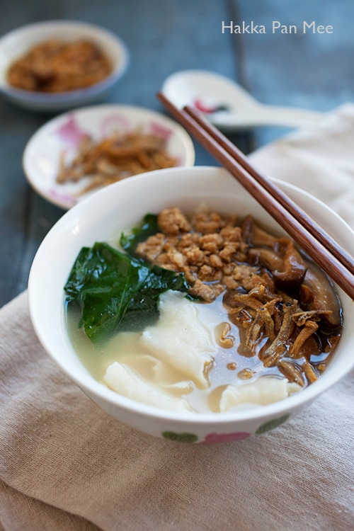

Pan Mee

Description
Pan Mee is a popular dish in Malaysia, especially in Kuala Lumpur, which is also where most people claimed it is from. This dish is only made out of simple ingredients such as flat noodles, ground beef and anchovies, but do not be be fooled by it's simplicity, for that is what makes it so special. The combination of these ingredients produces a superb flavour makes it the go-to dish for many Malaysians and cementing it's place in the Malaysian culture.
Ingredients
Soup:
- 1 cup of dried anchovies (heads removed)
- 1lb. beef/pork bones
- 10 cups of water
- 3 stalks of scallions (white part only)
- Salt to taste
Dough:
- 2 cups of all-purpose flour
- 1 large egg
- 1/4 cup of water (+2tbsp of water)
- Extra flour for dusting
Ground Beef/Pork and Mushroom Topping:
- 1tbsp oil
- 1 clove garlic (fairly minced)
- 4oz. ground beef/pork
- 4 dried shiitake mushrooms (soaked in warm water and stems removed, cut into strips)
- 1tbsp black soy sauce
- 1tbsp soy sauce
- 1tsp oyster sauce
- 1 1/2 teaspoons sugar
- 3 dashes of white pepper
- 1/2 cup water
- 1tsp corn starch (+1tbsp water)